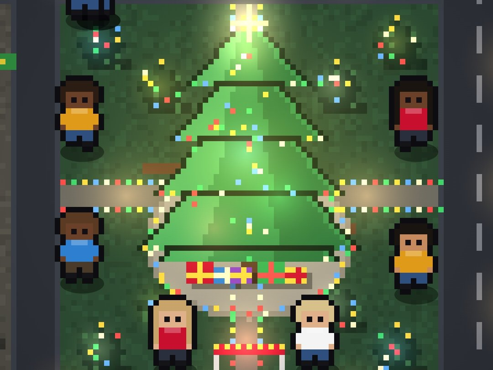

NOVO NA CIDADEMAPA · CARAGUÁ PIXEL
O mapa de Caraguá Pixel
A cidade que nasceu vazia e agora tem morador em cada janela acesa. Toque num ponto do mapa para ver o lugar de perto.
Lugares da cidade
Novo / Em obras
Mistérios
Toque num ponto para ver de perto

Lugares da cidade
Novo & Em obras
Mistérios
Guia Urbano · 23°37′ S · 45°25′ O
Bairros, setores e construções de Caraguá Pixel
Inspirada em Caraguatatuba, a malha urbana reúne 1.149 moradores distribuídos por 1.048 casas, 136 quarteirões e polos de lazer, saúde, governo e comércio real.
Centro Cívico & Praça de Natal
No eixo central ficam a Prefeitura, onde a Prefeita Julia (@julia_silxo) ocupa o trono oficial da gestão, e a Câmara Municipal com as cadeiras dos 15 vereadores eleitos do Dia 1. Logo ao lado estão o Fórum, com vagas abertas para o primeiro julgamento, e a iluminada Praça de Natal.
Governo & PraçaShopping, Parque & Academia Pixel Fit
Na área oeste e na expansão norte brilham o Shopping Caragua Pixel (com seis lojas, cinema e praça de alimentação) e o Parque de Diversões na ponta da praia, com roda-gigante e Carreta da Alegria. A Academia Pixel Fit completa a rota esportiva da cidade.
Lazer & FitnessPixel Motors, Boulevard & Galeria Pixel
O corredor comercial liga a Galeria Pixel (8 lojas) ao Boulevard da Praia (4 lojas ao lado de Pizzaria Bella Caragua, Pixel Burger, Yakisoba Caiçara e Temakeria Sol Nascente) e à concessionária Pixel Motors. São 12 vitrines para empresas reais de Caraguatatuba.
12 Vitrines VIPSaúde, Educação & Cadeia 79
O atendimento à população funciona 24 horas entre a UPA 24h (com os profissionais Chris, Bruno e Vitória) e o Hospital Municipal de quatro andares com heliponto e ambulância. A Escola e Quadra recebem os professores Marco e Julia, enquanto a Cadeia 79 fica isolada a leste.
Serviços PúblicosOrla, Mar dos Pescadores & Bairro Novo
Seis prédios residenciais iluminam a orla em frente ao posto dos salva-vidas Pedro e Artur e ao Mar dos Pescadores, ponto de partida do barco de Enzo e do molhe do farol. Novos quarteirões seguem em obras no Bairro Novo para receber quem chega à cidade.
Orla & ExpansãoMistérios: Morro e Ilha do Outro Lado
Dois enigmas desafiam os moradores nos extremos do mapa: a luz que pisca todas as noites no alto do Morro Santo Antônio, acessível por trilha de terra, e a Ilha do Outro Lado do canal, onde ninguém da cidade conseguiu desembarcar até hoje.
Em Investigação